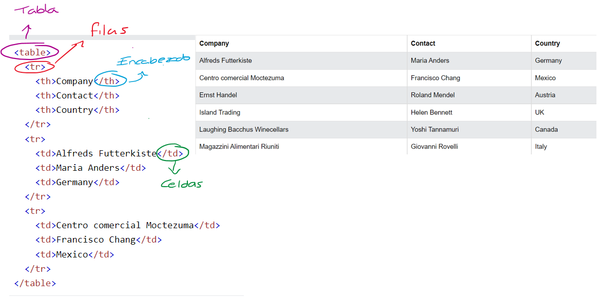
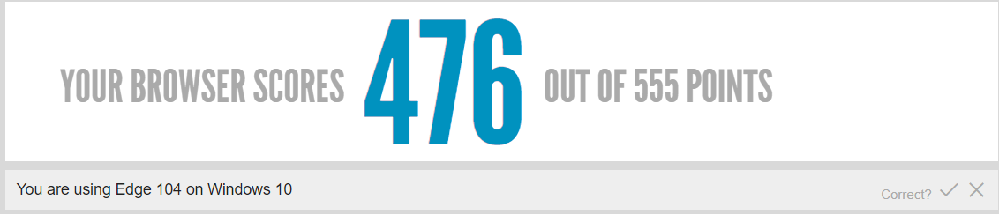

LAB 1 - PREGUNTAS A RESPONDER
¿Cuál es la diferencia entre Internet y la World Wide Web?
Definicion de Internet
Internet es un sistema global que interconecta redes de computadoras en todo el mundo. Conecta los dispositivos mediante cables de cobre, redes inalámbricas o cables de fibra óptica.
Utiliza el protocolo TCP / IP para la comunicación de datos. Esta red consta de varios dispositivos, como computadoras, enrutadores, concentradores, conmutadores, repetidores y muchos más.
Cada dispositivo en Internet tiene una dirección IP única para identificar el dispositivo.
Definicion de World Wide Web
World Wide Web (WWW) es una aplicación que se ejecuta en Internet. Se refiere a la gran conexión de las páginas web. Estas páginas están enlazadas mediante hipervínculos.
Por lo tanto, el usuario puede visitar de una página a otra para acceder fácilmente a la información requerida.
Una combinación de páginas web relacionadas se denomina sitio web..
Diferencias
El Internet implementa todas las capas del modelo TCP/IP mientras que el World Wide Web
se queda a un nivel mas alto del modelo OSI o TCP/IP.
¿Cuáles son las partes de un URL?

¿Qué método HTTP se debe utilizar al enviar un formulario HTML, por ejemplo cuando ingresas tu usuario y contraseña en algún sitio? ¿Por qué?
POST - Se utiliza para enviar datos al servidores para crear/ actualizar el recurso.
Este es el metodo mas seguro
¿Qué método HTTP se utiliza cuando a través de un navegador web se accede a una página a través de un URL?
GET - La informacion viaja en el encabezado
Un servidor web devuelve una respuesta HTTP con código 200. ¿Qué significa esto? ¿Ocurrió algún error?
Respuesta Exitosa. No es un error, el resultado significa "success", es decir que fue exitosa la respuesta
¿Es responsabilidad del desarrollador corregir un sitio web si un usuario reporta que intentó acceder al sitio y se encontró con un error 404? ¿Por qué?
DEPENDE, si la URL esta rota es responsabilidad del desarrollador, pero si el usuario ingreso la URL mal entonces no
¿Es responsabilidad del desarrollador corregir un sitio web si un usuario reporta que intentó acceder al sitio y se encontró con un error 500? ¿Por qué?
Si, error en el servidor asi que el desarrollador debe corregir el problema.
¿Qué significa que un atributo HTML5 esté depreciado o desaprobado (deprecated)? Menciona algunos elementos de HTML 4 que en HTML5 estén desaprobados
Atributos no compatibles con HTML
EJMPLOS:
Los estilos en codigo sobre un tag tiene prioridad sbre cualquier otra cosa
Sobre escribe los otros estilos.
| ATRIBUTO | ELEMENTO | DESCRIPCION | ALTERNATIVA |
| abbr | td | Contiene una descripción abreviada del contenido de una celda. | < abbr > |
| accept | form | List of file extensions that are accepted in file picker. | accept attribute |
| align | caption, iframe, img, input, object, legend, table, hr, div, h1, h2, h3, h4, h5, h6, p, col, colgroup, tbody, td, tfoot, th, thead and tr.l | Aligns the content in an element. | CSS text-align |
| bgcolor |
table, tr, td, th and body. |
Defines background color for element. |
CSS background-color |
| char |
col, colgroup, tbody, td, tfoot, th, thead and tr. |
Aligns content to a character, for example "," or ".". |
n/a |
| bottommargin |
body |
Specifies the margin to the bottom of the page |
CSS margin-bottom |
HTML Deprecated Attributes - Dofactory. (2022). Retrieved 11 August 2022, from HTML Deprecated Attributes
¿Cuáles son las diferencias principales entre HTML 4 y HTML5?
- Sintaxis Simplificada
- Nuevos elementos (canvas,header,footer,section,menu,audio,etc)
- Adios a las etiquetas como b y font, hola a CSS
¿Qué componentes de estructura y estilo tiene una tabla?

¿Cuáles son los principales controles de una forma HTML5?
EJEMPLO:
NOTA: Este formulario es para fines demostrativos, no tiene funcionalidad.
¿Qué tanto soporte HTML5 tiene el navegador que utilizas?

Sobre el ciclo de vida y desarrollo de los sistemas de información:
¿Cuál es el ciclo de vida de los sistemas de información?
¿Cuál es el ciclo de desarrollo de sistemas de información?
CICLO DE VIDA
Vease en PowerData - Ciclo de vida de un sistema de información: fases y componentes
- Fase de planificación
- Fase de análisis.
- Fase de diseño.
- Fase de desarrollo.
- Fase de integración y periodo de pruebas
- Fase de implementación.
- Fase de mantenimiento.
CICLO DE DESARROLLO
Vease en Club ensayos - Ciclos De Desarrollo De Sistemas De Información
- Identificacion de problemas y objetivos
- Detereminacion de los requerimientos de informacion
- Analisis de las necesidades del sistema